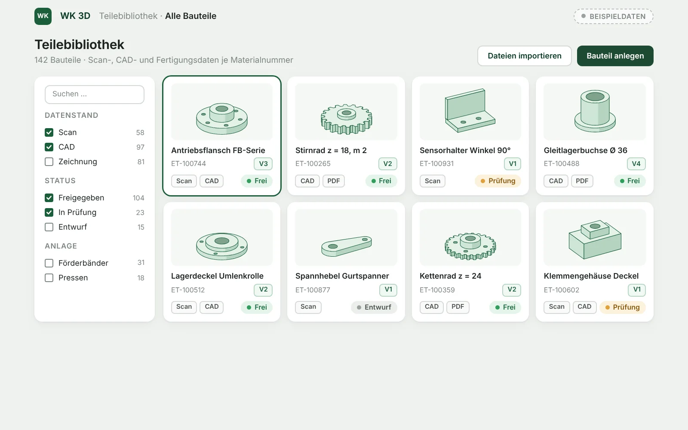
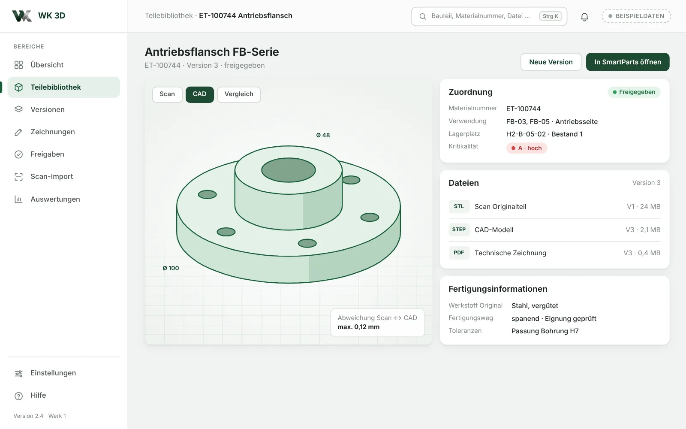
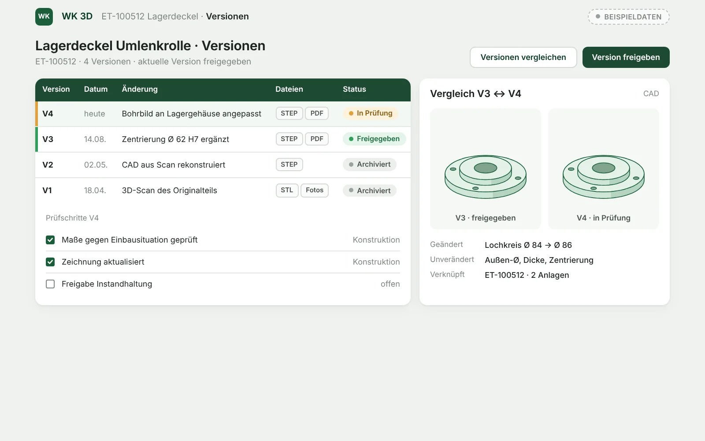
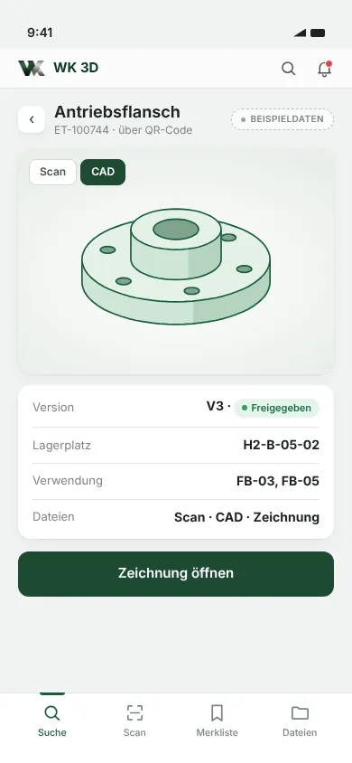

WK 3D · Digitale Teilebibliothek
Technische Teiledaten. Geordnet und auffindbar.
Scans, CAD-Modelle, Zeichnungen und Fertigungsinformationen in einer Teilebibliothek – versioniert und der Materialnummer zugeordnet.
- Status
- Web: noch festzulegen
- iOS: Geplant
- Android: Geplant
Software, nicht Scan-Service
Jedes Bauteil mit seinem digitalen Datensatz.
WK 3D verwaltet, was beim Scannen, Konstruieren und Prüfen entsteht.
- Scan-, CAD- und Zeichnungsdateien an einem Ort
- Versionen und Freigaben nachvollziehbar
- Zugeordnet zu Materialnummer und Anlage



Konzeptansicht mit Beispieldaten.
Funktionen
Vom Scan bis zur Fertigungsinformation.
Technisches Wissen bleibt erhalten – auch wenn das Originalteil nicht mehr lieferbar ist.
Digitale Teilebibliothek
Vorschau, Datenstand und Status – suchbar nach Materialnummer, Begriff oder Anlage.
Scan-Dateien
Scandaten mit Fotos und Messprotokoll – Referenz für spätere Prüfungen.
CAD-Dateien
Modelle und Zeichnungen, Abweichungen zwischen Scan und Modell.
Versionen & Freigaben
Jede Änderung als Version mit Prüfschritten und Freigabe.
Material- und Anlagenzuordnung
Verknüpft mit Materialnummer, Lagerplatz und Anlage.
Fertigungsinformationen
Werkstoff, Toleranzen und geprüfter Fertigungsweg je Bauteil.
Ob ein Bauteil nachgefertigt werden kann – etwa additiv oder spanend –, wird je Bauteil technisch geprüft. WK 3D dokumentiert das Ergebnis.
Mobile Version
Die Zeichnung direkt am Bauteil.
An der Anlage oder im Lager sofort sehen: Version, Lagerplatz, Verwendung, Dateien.
- Bauteil per QR-Code oder Suche finden
- 3D-Vorschau und Zeichnung ansehen
- Freigabestand vor dem Einbau prüfen
Mobile Version: Geplant

Abgrenzung
WK 3D und 3D-Technik: Software und Dienstleistung.
WK 3D für eigene Daten oder für Daten aus unserer 3D-Dienstleistung – Scan, CAD und Druck erledigen wir intern.
WK 3D · Software
- Teilebibliothek und Dateiverwaltung
- Versionen, Freigaben, Dokumentation
- Zuordnung zu Material und Anlage
- Verknüpfung zu WK SmartParts
3D-Technik · Dienstleistung
- 3D-Scan des Originalteils – intern
- CAD-Aufbereitung und Rekonstruktion – intern
- Prototyp und Fertigungsprüfung
- 3D-Druck geeigneter Teile – intern
Der technische Pfad für kritische Ersatzteile.
Ist ein Ersatzteil kritisch und schwer beschaffbar, wird der digitale Datensatz zur Versorgungsoption.
- Kritisches Teil erkannt · SmartParts
- Scan und CAD · 3D-Technik
- Datensatz und Freigabe · WK 3D
- Lagerplatz · WK Material
WK SmartParts
Zeigt, für welche kritischen Teile ein digitaler Datensatz sinnvoll ist.
WK SmartPartsAlternativteile
Wenn das Original fehlt: Alternative, neuer Lieferant oder Nachfertigung prüfen.
Zur LeistungWK Instandhaltung
Stellt Zeichnungen und Modelle beim Auftrag an der Anlage bereit.
WK InstandhaltungLassen Sie uns ins Gespräch kommen
Wo liegen heute Ihre Zeichnungen und Modelle?
Wir prüfen, wie Ihre technischen Teiledaten sinnvoll geordnet und genutzt werden können.
- Telefon+49 160 277 65 12
- E-Mailservice@werringloer.de
- StandortPeetzweg 46, 38228 Salzgitter